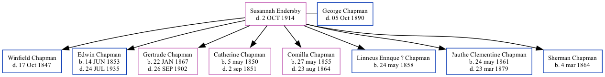

Susannah Chapman (née Endersby) - 1914
[ Home ] | [ Surnames Index ] | [ Family History ]
Susannah was the 3 times great-grandmother of Jay Hannah and had 8 children with George Chapman: Winfield Scott, Edwin Fredonzo, Gertrude Narsissus, Catherine Elva, Comilla Elizabeth, Linneus Ennque?, ?authe Clementine and Sherman Logan.
She died on Oct 2, 1914.
Children
- Edwin Fredonzo was born on Jun 14, 1853
- Gertrude Narsissus was born on Jan 22, 1867
- Catherine Elva was born on May 5, 1850
- Comilla Elizabeth was born on May 27, 1855
- Linneus Ennque? was born on May 24, 1858
- ?authe Clementine was born on May 24, 1861
- Sherman Logan was born on Mar 4, 1864
Family Tree

Data (GEDCOM) maintained by Jay Weston Hannah, Omaha, Nebraska, USA.
Website generated by Ged2Site. Last updated on Jun 30, 2025.